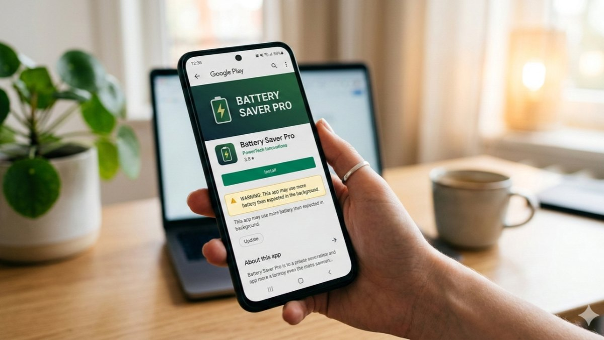
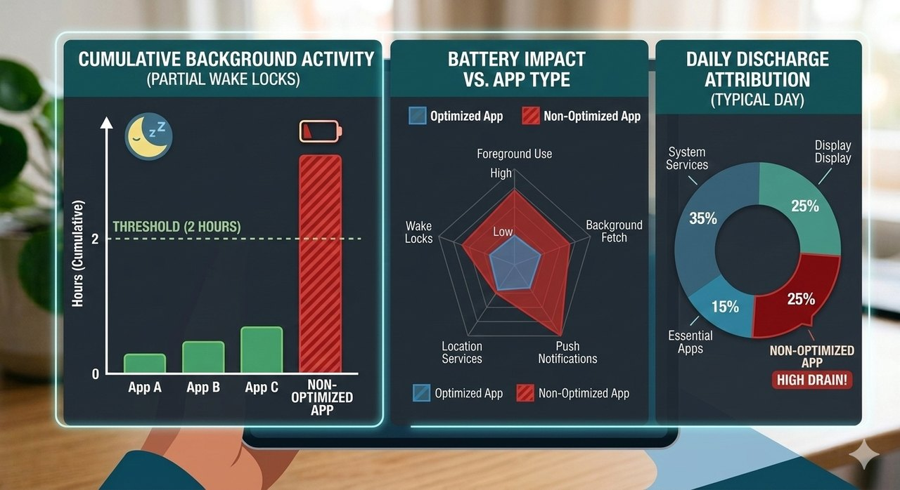

Deep dive · Android
Google's war on partial wake locks
Google is no longer just suggesting battery optimization; it is actively policing it. By introducing real-time warnings on the Play Store, the Android team is using user behavior as a lever to force developers into compliance.

01 — The trigger
The technical trigger: partial wake locks
The core of this issue lies in partial wake locks. These are API calls that allow an app to keep the CPU running while the screen is off.
The problem. Poorly coded apps often “forget” to release these locks, causing “stuck” background processes. Nothing is visibly wrong: the screen is off, the user is asleep, and the CPU keeps running on behalf of an app that has nothing left to do.
The new threshold. Google defines “excessive” as a partial wake lock held for more than one hour — or a cumulative two hours in some reports — while the screen is off, affecting at least 5 % of an app's battery sessions. Below that bar, nothing happens. Above it, the store listing changes.
Diagram — daily battery consumption

02 — The penalty
The “vital” penalty system
This isn't just a UI warning; it's integrated into Android Vitals.
Search ranking. Apps that fall into the bottom 25 % of performance metrics — including battery and crash rates — are already deprioritized in search results. The battery metric doesn't create that mechanism; it feeds it.
The “shame” badge. The new warning acts as a high-friction barrier at the point of conversion. For a developer, a “battery drain” warning is the equivalent of a “security risk” popup — it kills the install rate instantly.
03 — Business impact
Business impact: the cost of negligence
For product managers and stakeholders, this update shifts battery optimization from a “nice-to-have” technical debt item to a top-tier business risk.
Higher customer acquisition cost
- If your store page warns users about battery life, your conversion rate will plummet.
- Every ad dollar spent becomes less effective: the traffic still arrives, it just stops converting.
- The warning applies to the listing, so paid and organic acquisition degrade at the same time.
Brand trust
- In a competitive market — fitness trackers, social media — being the “battery killer” app leads to rapid uninstalls.
- Negative reviews follow the uninstalls, and reviews outlive the fix that removed the warning.
- Users rarely blame a wake lock; they blame the brand attached to it.
The takeaway
Battery behaviour used to be an engineering detail argued about inside the team. It is now a public property of the product, printed on the one page every prospective user reads. The technical work hasn't changed — release your locks, batch your background work, prefer the scheduler over the CPU — but the person who pays for skipping it has: it's no longer the developer at the next code review, it's the business at the next acquisition report.